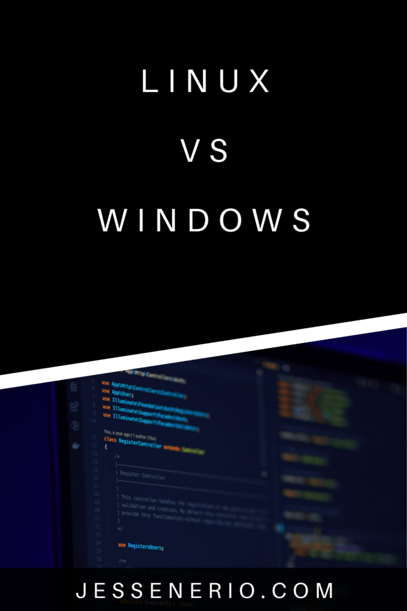
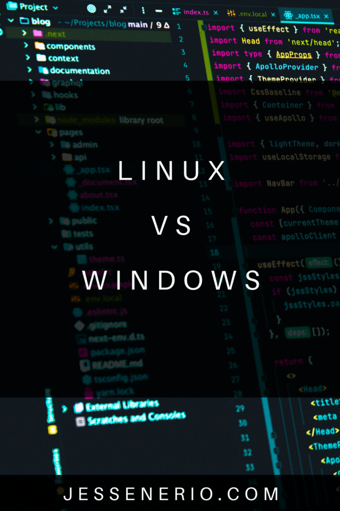
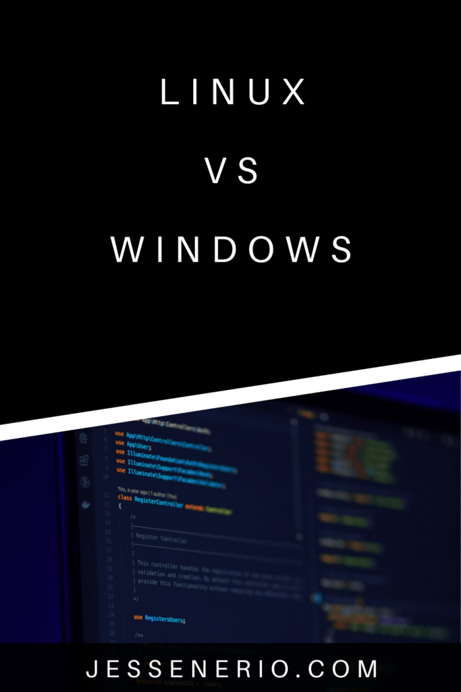
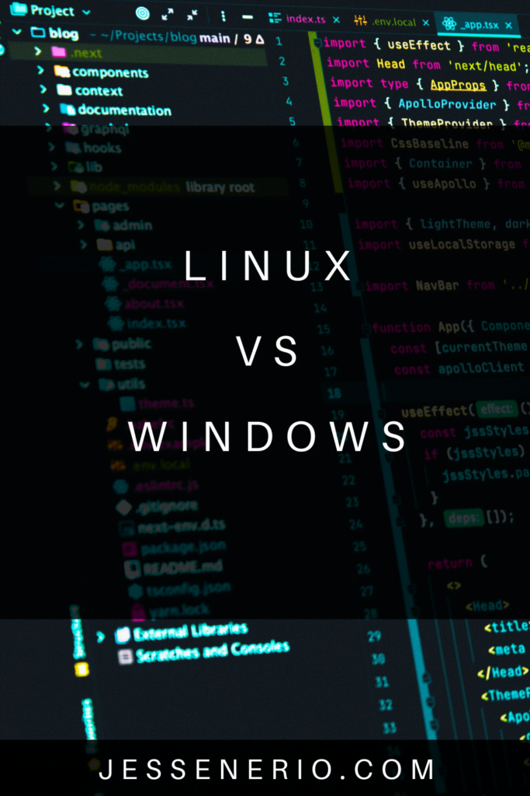

I remember years ago, my biggest reason for switching to Linux was the impressive speed. For the first time in my life I ran Linux on my neighbors personal PC, a 10+ year old computer.
It was a 4GB RAM, dual-core Pentium computer with on-board graphics. I wanted to run it against my Windows PC which had 12GB Ram, a 6th generation i7 six core processor and a GTX 1050 video card or so, I forget the exact number, but it was one of the good ones.
I decided to try a lite OS to see if it would speed up the slower computer. After installing Linux Mint on the slow PC, I started working on essays and basic coding then quickly realized my neighbors PC was running smoother than my own.
It couldn't run Jetbrains or any video games, but it started up near instantly, installed software easily/quickly, never updated and all the applications popped up as soon as I double clicked it. Ever since then, I decided to learn Linux for software development...
Why Stick With Windows
Yes, Windows has a lot of support for its software and many computers come pre-installed with it. It is most readily available out of the Amazon box with many file extensions supported for use. The majority of people use both Mac & Windows.
Photo by Isabella Fischer on Unsplash
Though, it doesn't take much to reach a speeding plateau with Windows. There is a point where more RAM, more CPU/GPU power won't save you from the limits of bloatware due to the operating system hanging on itself, not even depending on your hardware.
With that said here are some of the recent pros and cons list of the two software:
Linux Pros
This OS has always been king in commercial servers. Likewise Windows & Mac have been kings in personal computing. I want to show you some more recent developments and why it is a strong force in the personal computing world nowadays:
- Most games are supported: This is a recent development. In the past DirectX games (Windows games) were completely unplayable. With the advent of the Steam Proton (epic btw) we can finally play DirectX games by forwarding function calls to Vulkan & OpenGL. This is a massive step forward for Linux and with this I believe Linux is officially becoming a real option for the average user.
- More free software: All Linux OS distributions are downloadable online for free. The developers who make products for Linux follow an open-source code sharing model along with often free or freemium pricing plans. This means people are working on each others programs all over the place. There is way more free software on Linux than windows.
- Customization: All software in Linux can be substituted. Given we have the skill, there are a near infinite number of variations of how the OS is put together. This is the whole point of a distribution. A Linux developer simply made their own variation of a set of software. It is just really cool because all bloatware can be removed.
- Great ecosystem: There are many people who are willing to support other Linux developers. All software has been used, documented and questioned. Plenty of advice for your given software likely exists, though it takes a practiced eye to identify good advice..
- The in-crowd: You get to join the "in-crowd" of developers. My software developer friends scoff at me for sticking to Windows. Their basic sentiment is "Linux makes you cool". Another one, "Arch Linux btw", a fun little phrase people say is a bit of a meme right now. And, I have to admit, I may move all my PCs to Linux soon, I want to be cool too.
Linux Cons
You will find Linux to be less beginner friendly. The issue here is its versatility. It is in fact too versatile for people to readily pick up:
- Steep learning curve: With zero experience in Linux you will need a second computer or phone to debug what is happening with the OS. It is too easy to lock yourself out or accidently wipe a drive. It is a long googling process to understand the basics.
- Few distributions are beginner friendly: Most versions of Linux require some knowledge to get started. There are some super lite Windows-like distributions you can take to, which I recommend. My personal past favorite has been Linux Mint, but you can Google others.
- Easy to lose data: There are less safe guards in Linux against deleting your data. By default, cloud is not as easily supported and is typically a premium service. It is too quick and easy to delete a file structure or format a hard disk. Definitely create a backup for your files as a beginner.
- Completely different software: The software options are completely different than Windows & Mac. If you are switching from either of those you have to learn all the different driver options, IDEs, Word processors, open-source software and typical utility software.
Windows Pros
Windows is the de facto standard for workstations & PCs. For most releases, this OS has done a good job balancing beginner friendliness and power. Microsoft did their best to dominate the systems world and were quite successful:
- Heavily supported: Windows is mainstream and thus is heavily supported by a online communities.
- You were probably already taught Windows: This is probably the biggest reason you are not on Linux.
Windows Cons
There is a huge margin of software between the Windows Kernel and application layer. Developers are constantly changing layers upon layers of code and it leads to all this:
- Random updates/restarts: Sometimes the updates don't work. I have had to re-install Windows several times due to bad OS updates which broke its runtime.
- More viruses: Always for all time, I needed anti-virus software. Often I played private servers from things like WoW & Runescape and for some reason the viruses were always for Windows. Though, recently Windows Defender has made viruses more of a non-threat.
- Random hang ups: I am a power user of sorts, so I need expensive hardware. But the operating system often hangs, despite not running any apps. It depends on the software but, even with a brand new computer with 20GB+ Ram and 10th generation i7 CPU I still see hangs in Windows due to the bloat under the application layer.
- Software is cumbersome & slow: The software is bloated on Windows. It loads lots of unnecessary code and uses up more memory than needed. It is not as streamlined.
Photo by Kah Lok Leong on Unsplash
In the end, what should be done? Shall you sacrifice the short term benefits of Windows/MacOS for Linux? Do you really need it? Or, do you just want to be cool? I hope this article clarified your thoughts on the OS and why it is so popular, even for personal computing.
Anywho, I hope you learned something...
Happy coding!
Resources
Linux Mint: https://linuxmint.com/
Steam Proton: https://github.com/ValveSoftware/Proton
 


